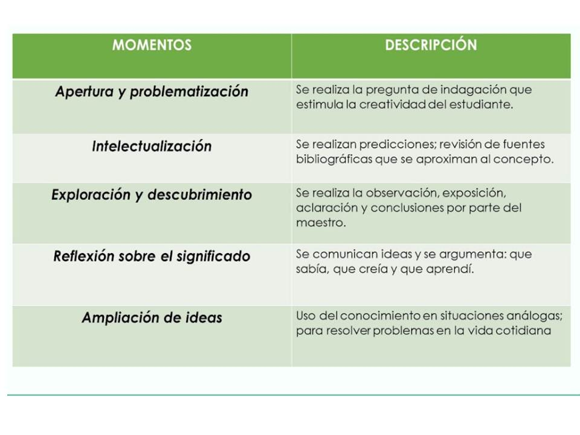

INTRODUCCIÓN
Este sitio académico tiene como objetivo dar a conocer una serie de actividades que facilitan el reconocimiento del concepto de área y perímetro de los polígonos que conforman el tangram. De esta manera, se propende por la adquisición de aprendizajes significativos desde la estrategia de construcciòn del conocimiento; la cual busca desde la problematización fomentar el espíritu indagador y critico de los estudiantes hacia la comprensión de su entorno; dicha estrategia esta dividida por los siguientes momentos:
